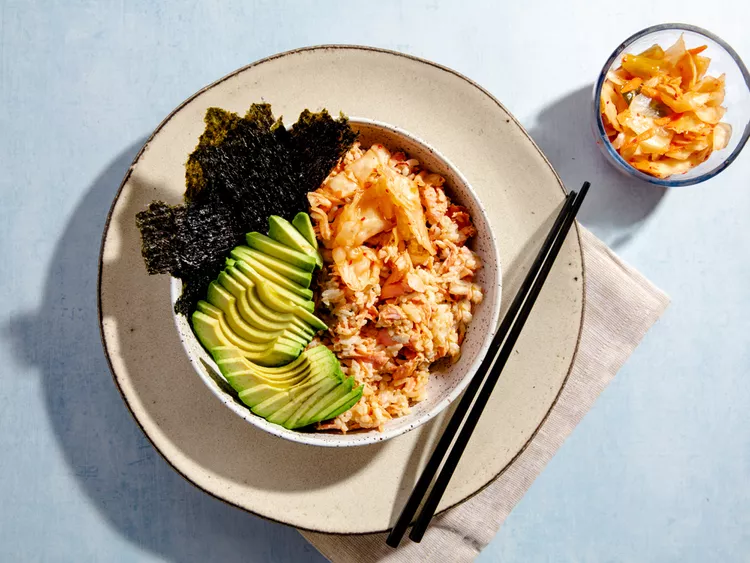

Salmon Bowl

Description
Last night's leftovers become lunch-time magic with this TikTok-inspired
Salmon Bowl created by Emily Mariko. A quick trip in the microwave
reheats the salmon and rice (you'll love the accompanying ice cube
trick), then it's all about the toppings! Soy sauce, sriracha and Kewpie
mayonnaise get mixed in for a perfectly spicy sauce. Pair it with
umami-rich nori and kimchi, and you've got an epic lunch.
Ingredients
- 3 ounces cooked salmon, flaked
- 1 cup cooked white rice
- 1 tablespoon soy sauce
- ½ teaspoon sriracha or other hot sauce
- 2 teaspoons Japanese mayonnaise (such as Kewpie®)
- 1 sheet nori, torn
- ½ ripe avocado, sliced
- ¼ cup kimchi
Steps
-
Use a fork to flake salmon onto a microwave-safe plate. Top with rice
and place 1 ice cube on top. Cover with a microwave-safe lid and
microwave at low power for 30 seconds. Uncover and check temperature.
If salmon and rice are not warm enough, cover and return to the
microwave for another 30 seconds at low power.
-
Uncover and remove ice cube. Drizzle soy sauce, Sriracha and
mayonnaise over the top and toss everything with a fork until
well-combined.
- Garnish with torn pieces of nori, sliced avocado and kimchi.